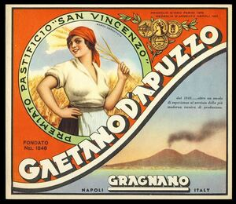

Trade Mark Journal No.2026/010 6 March 2026
WO0000001902510 (30,35)
Office of origin: Italy

THE BRAND IS RECTANGULAR AND FEATURES A CROSSWORD IN ANTIQUE HAND-CAST LETTERS: "GAETANO D'APUZZO" IN WHITE WITH A BLACK BORDER. ON THE LEFT, AGAINST A RED BACKGROUND, A WOMAN IN A WHEAT FIELD PICKING EARS OF CORN, ALL COLLECTED IN A CIRCLE WITH THE WRITING ON A GREEN BACKGROUND: "PREMIATO PASTIFICIO "SAN VINCENZO"". IN THE UPPER RIGHT PART ARE FOUR GOLD MEDALS AMONG GREEN LEAVES WITH THE WRITING "GOLD MEDALS PARIS 1878 - SILVER MEDAL NAPLES 1891". AT THE BOTTOM RIGHT, THE IMAGE OF THE GULF OF NAPLES WITH SMOKING VESUVIUS, WHICH AT THE BOTTOM HAS THE WRITING NAPLES IN BLACK, THE WRITING GRAGNANO IN WHITE UNDERLINED AND THE WRITING ITALY IN BLACK. INSIDE THE REPRESENTATION OF THE GULF, PLACED ABOVE SMOKING VESUVIUS IS THE WRITING SINCE 1848 OVER A CENTURY OF EXPERIENCE AT THE SERVICE OF THE MOST MODERN PRODUCTION TECHNIQUES.
Red, white and blue.
- Class 30
- Vinegar; cocoa; coffee; flours; ice cream; ice cream; ice, natural or artificial; yeast; honey; bread; lozenges [confectionery]; rice; sago; salt for preserving food; sauces [condiments]; treacle; mustard; spices; artificial coffee; tapioca; sugar; flour and preparations made from cereals.
- Class 35
- Advertising; business administration; business management; office work.
MF ITALIAN FOODCO S.R.L.
Representative: Avvocato Rocco Novelli, VIA VITTORIO SELLITTI, 5, I-84014 NOCERA INFERIORE (SA), ITALY